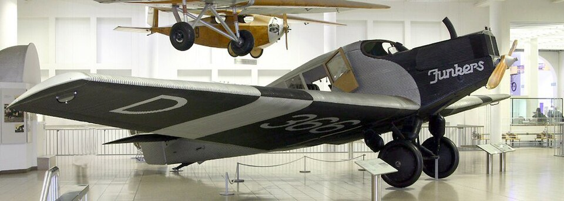

Geschichte im Spiegel der zeitgenössischen Berichterstattung — Täglich neu erzählt
Die historische Presseschau
Samstag, 24. Juli 1926
7 Artikel aus 10 Originalquellen · 4 Länder · 3 Sprachen
Hörsing warnt vor politischer Zersetzung — Ministerpräsident Heldt im Visier der Linkssozialisten — Neuwahlen in Sachsen im Oktober
Großbritannien verwahrt sich gegen amerikanische Darstellung — Poincaré fordert Transferschutz — Mellon in Paris eingetroffen
Nachwirkungen der Neunkirchener Vorfälle — Scharfer Protest der heimischen Presse — Sorge um Verbleib der französischen Truppen
Ein vorbereitender Ausschuss tritt an die Öffentlichkeit — Prominente Unterzeichner aus Wissenschaft und Politik — Rein wirtschaftliche Zielsetzung
Ausarbeitung des Berichts in Genf — Mangelndes Transportnetz erschwert Abkehr vom Mohnanbau

Das Ende der Konstruktionsbeschränkungen und die Konzentration im Flugverkehr
Karl Rassay zum Präsidenten gewählt — Fraktion zählt vierzehn Mitglieder